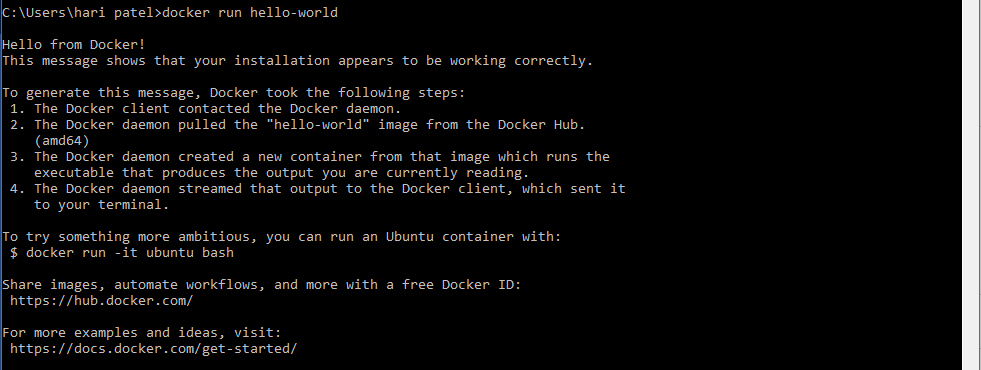
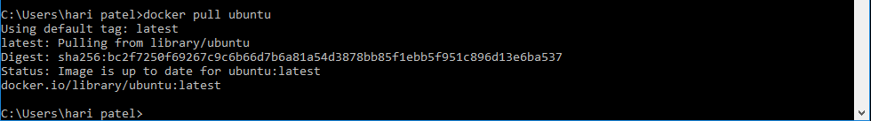
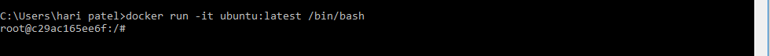
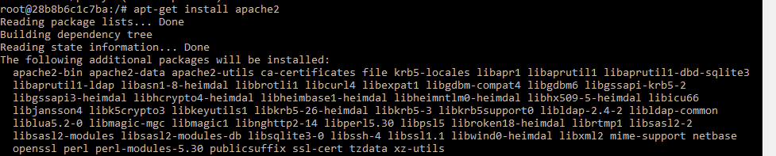
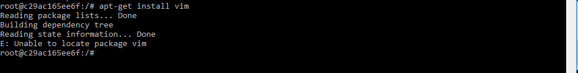
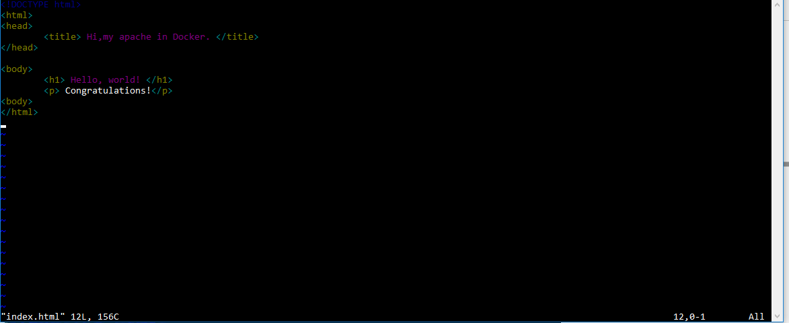
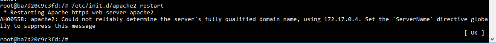
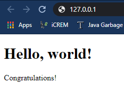

Setup a Web server using Docker
Before setting up a server we must know the real meaning or definition of a server. So, the Server is a program that provides the client with any kind of services. For example, a web server provides our websites, a database server provides us data. This means every server has work to do and for every different work we want them to do, we have to choose different servers.
Pre-requisite:
- Linux Operating system Like Ubuntu, Redhat, Kali Linux
- Internet connectivity
- Docker installed on system
3 steps to configure a Web Server
- Install the Server Program
- Configuration of Server
- Start the server
Installing the Server Software
1. Install Docker Engine
After the installation, you can run following command to test your installation.docker run hello-world
2. Pull an Ubuntu image from Dockerhub
docker pull ubuntu
3. Run the ubuntu docker image
docker run -it ubuntu:latest /bin/bash
4. Install apache2
apt-get install apache2
5. Install vim editor
apt-get install vim
Configuring the Web server
Actually the server is already been configured and now its the time to update or make a website over this server.Server website can be accessed using the IP address of the host. Setup website.1. Share the data between Docker container and Host
Using following command we can share the data between docker container and host.docker run -it -p 127.0.0.1:80:80 -v F:\Docker_tutorial\local_dir:/var/www/html ubuntu-my_apache2 /bin/bash
- -it : log into an interactive shell
- -p : expose an port of Docker container
- -v : bind a host directory to Docker container
2. vi Editor in UNIX
Go to html directory and create an index.html file using following commands.cd /var/www/html
vi index.html
Start the server
/etc/init.d/apache2 restart
